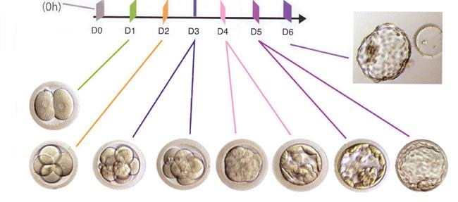
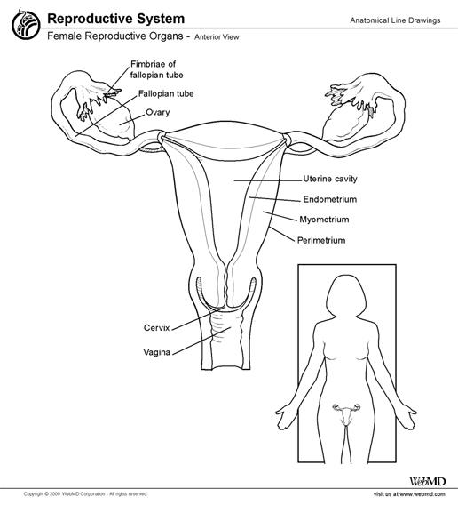
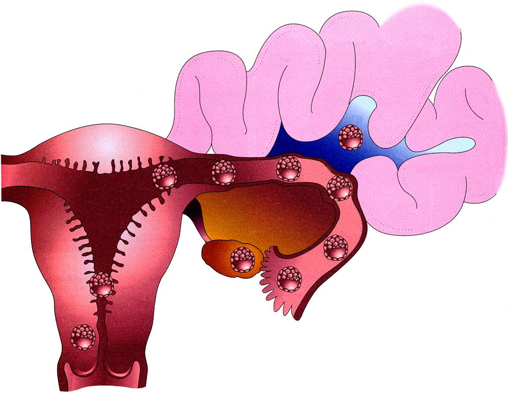
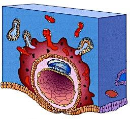
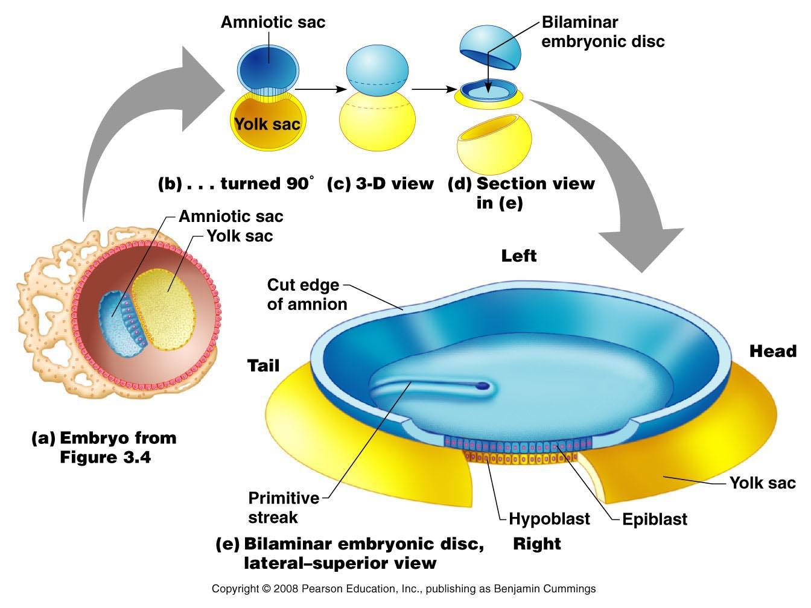
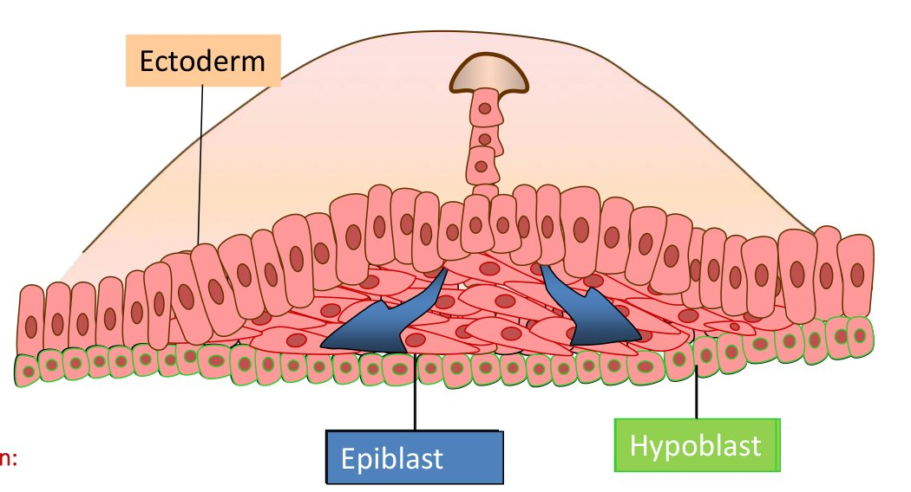
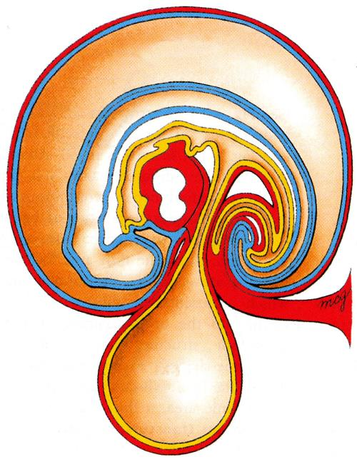
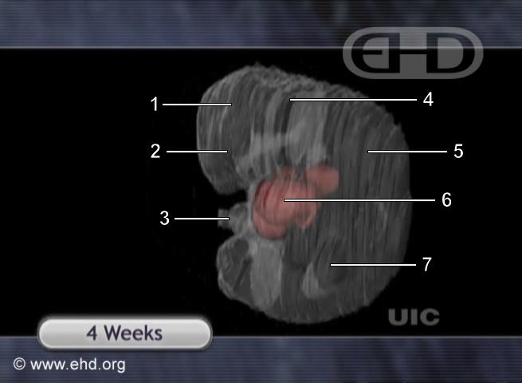
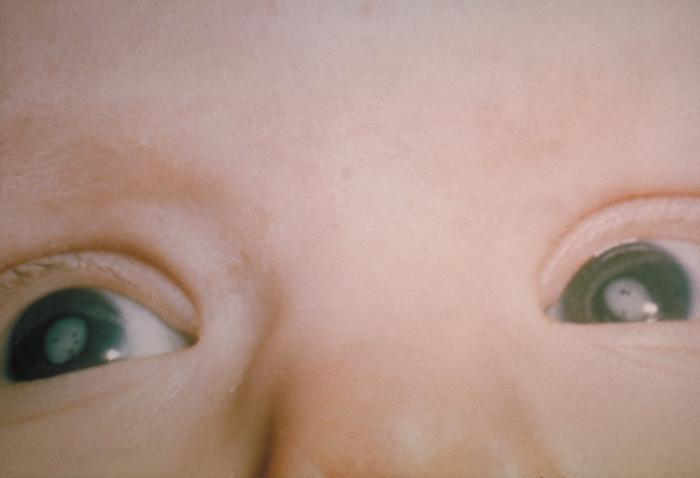

Early Embryogenesis
- One week, one job. Week 1 travel and implant · Week 2 make two of everything · Week 3 make three germ layers · Week 4 close the tube and fold the body.
- Week 1: fertilization in the ampulla → cleavage (cells divide, embryo does not grow) → morula → blastocyst. Two populations already exist: embryoblast (the embryo) and trophoblast (placenta and membranes).
- Week 2 is the rule of twos: 2 germ layers (epiblast, hypoblast), 2 cavities (amniotic, yolk sac), 2 trophoblast layers (cyto-, syncytio-). The syncytiotrophoblast makes hCG, which keeps the corpus luteum alive.
- Week 3 is gastrulation: the primitive streak converts a bilaminar disc into ectoderm, mesoderm and endoderm. The notochord then induces the neural plate.
- Week 4: neuropores close — cranial ~day 25, caudal ~day 27. Failure cranially = anencephaly; caudally = spina bifida. Folding turns a flat disc into a C-shaped body; the heart is beating.
- Teratogen windows: weeks 0–2 all-or-none · weeks 3–8 peak risk of major structural anomalies · week 9 to term mostly functional and minor defects.
Learning Objectives
- Describe fertilization, implantation and week 1 of embryonic life, with clinical correlates.
- Describe embryogenesis from weeks 2–4 and its clinical applications.
- Reflect on the factors that affect embryogenesis.
Week 1: The Journey
Everything in week 1 happens while the embryo is in transit. It is dividing the whole way down the tube, but not growing — each division halves the cell size, so the whole ball stays the size of the original oocyte until it reaches the uterus.


Zygote → morula → blastocyst. The morula is named for looking like a mulberry.
Decidual reaction. Progesterone has driven the endometrium secretory — coiled glands loaded with glycogen, ready to feed the embryo.| Step | What actually happens |
|---|---|
| Fertilization | Of 200–300 million sperm entering the tract, one reaches the oocyte in the ampulla. The acrosomal cap releases enzymes to penetrate the corona radiata and zona pellucida. On contact with the oocyte membrane the zonal reaction makes the zona impenetrable — this is the block to polyspermy. Male and female pronuclei fuse: a diploid zygote, 44 + XX or XY. |
| Cleavage | Mitotic divisions producing blastomeres. 2 → 4 → 8 → 16 → 32 cells. At 16–32 cells it is a morula (Latin for mulberry — that is what it looks like). |
| Blastulation | By day 4 a fluid-filled cavity appears and the ball becomes a blastocyst, now sorted into embryoblast (inner) and trophoblast (outer). |
| Hatching | Day 5: the blastocyst secretes enzymes and escapes the zona pellucida. The zona must go — nothing can implant through it. |
| Decidual reaction | Meanwhile the corpus luteum’s progesterone has switched the endometrium from proliferative to secretory: coiled glands secreting glycogen and glycoproteins, oedematous stroma. If implantation happens, those secretions feed the embryo. If not, the endometrium is shed as menses. |
Implantation anywhere other than the uterine cavity. It is a surgical emergency because those sites cannot accommodate a growing pregnancy and rupture with major haemorrhage.

| Site | Share of ectopics |
|---|---|
| Tubal — total | ~95% |
| Ampulla — the single commonest site | ~70% |
| Isthmus | ~12% |
| Fimbrial | ~11% |
| Interstitial / cornual | ~2% |
| Ovarian | ~3% |
| Abdominal | ~1% |
| Cervical | Rare |
Note it is the ampulla in both the normal and the abnormal story: it is where fertilization happens, so it is where a delayed embryo implants. Anything that slows tubal transport — prior PID with scarring, prior ectopic, tubal surgery, smoking — raises the risk.
Percentages from Bouyer et al., Hum Reprod 2002;17:3224–30 (1,800 consecutive cases). The lecture slide gives 96–98% tubal, 4% ovarian, 1% cervical and 1% abdominal, which sums to more than 100% — the figures above are the population-based numbers.
Week 2: The Rule of Twos
This is the most memorable week, because everything in it splits in half. Learn the three pairs and week 2 is done.

The rest of week 2 is placenta construction. Extraembryonic mesoderm covers the inner surface of the cytotrophoblast and the outer surfaces of the yolk sac and amnion; a cavity opens within it — the chorionic cavity (extraembryonic coelom). Chorionic villi — built from cytotrophoblast, syncytiotrophoblast and extraembryonic mesoderm together — invade maternal tissue, fetal vessels grow into them, and the uteroplacental circulation begins.

The syncytiotrophoblast secretes human chorionic gonadotropin. Its job is to keep the corpus luteum alive so progesterone keeps flowing — without it the corpus luteum regresses on schedule and the endometrium is shed with the pregnancy in it. The placenta takes over steroid production at around 7–9 weeks (the luteal–placental shift), after which the corpus luteum is no longer needed.
hCG shares the α subunit of LH, FSH and TSH and acts on the LH receptor — the link straight back to the HPG axis lecture. It is detectable throughout pregnancy, which makes it the pregnancy test.
Precision point: the slide says low hCG indicates ectopic pregnancy. More accurately, it is the trend that matters — a rise of <35–50% over 48 hours, or a plateau, suggests a non-viable pregnancy (ectopic or failing intrauterine). An hCG above the discriminatory zone (roughly 1,500–3,500 IU/L depending on the centre) with no intrauterine gestational sac on transvaginal ultrasound is the finding that points to ectopic. A single value is almost never diagnostic.
Week 3: Gastrulation
Two layers become three. This is the week that sets the entire body plan, and it is the week teratogens do the most damage.



What each germ layer becomes
| Ectoderm | Mesoderm | Endoderm |
|---|---|---|
| Epidermis and appendages (hair, nails, sweat glands, tooth enamel, mammary glands) Anterior pituitary Sensory epithelia of eye, ear, nose |
Heart and pericardium, entire circulatory system Connective tissue, cartilage, bone, skeletal muscle Kidneys, gonads, genital ducts Spleen, adrenal cortex, pleura |
Epithelial lining of the GI and respiratory tracts Lining of bladder and most of the urethra Parenchyma of thyroid, parathyroid, thymus, tonsil, liver, pancreas |
| Neural tube (ectoderm) → CNS, PNS, ANS. Neural crest (ectoderm) → meninges, ganglia, melanocytes, adrenal medulla. | ||
Two pairs are worth pinning down because they get confused: adrenal cortex is mesoderm but adrenal medulla is neural crest; and for the gut, endoderm supplies the epithelial lining while mesoderm supplies the muscle and connective tissue of the wall.
Week 4: Closing the Tube, Folding the Body
The slides give day 24 (cranial) and day 26 (caudal). The commonly cited textbook values are day 25 and day 27; either way the point is that both close in the fourth week, roughly two days apart.
Folding, and the body plan
In week 4 the flat trilaminar disc folds in the median and horizontal planes, driven by differential growth — the rim of the disc grows fast while the yolk sac does not. A flat disc becomes a C-shaped, three-dimensional body. Three consequences worth knowing:
- The yolk sac is pinched down to the vitelline duct, and the gut tube forms.
- The intraembryonic coelom is divided into the three body cavities: pericardial, pleural and peritoneal.
- The connecting stalk becomes the umbilical cord.

Folding. Head fold and tail fold curl the disc into a C. The yolk sac narrows to the vitelline duct, the gut tube forms, and the connecting stalk becomes the umbilical cord.
End of week 4 — the body plan is visible. Fore-, mid- and hindbrain, neck, the bulging heart, the first limb buds and the umbilical cord.Organogenesis is under way. The heart is the first organ to function — a heartbeat is detectable by week 4. The lungs are the last, and are not fully functional until birth.
What Can Go Wrong, and When
A teratogen is any agent that interferes with development of the embryo or fetus. Whether an exposure matters depends almost entirely on when it happens.
| Teratogen | What it does |
|---|---|
| Alcohol | No safe amount, no safe time. Fetal alcohol spectrum disorder; FAS is the severe end — mental, behavioural and learning problems plus physical disability. About 10.5 per 10,000 in Canada, ~15 per 10,000 worldwide. Entirely preventable by abstaining. |
| Rubella  Cataracts in congenital rubella syndrome. CDC/PHIL, via the lecture. | Congenital rubella syndrome: the classic triad is sensorineural deafness, cataracts and patent ductus arteriosus. Risk is highest early — up to 90% if infection occurs in the first 11 weeks, ~60% at 11–16 weeks, ~6% at 17–30 weeks, and essentially nil after 30 weeks. Bacteria are generally not teratogenic; viruses are. Prevented by immunisation. |
| Antiepileptics | Valproate and carbamazepine — strong association with spina bifida; valproate interferes with folate metabolism and is also linked to cleft lip and renal defects. |
| Tetracyclines | Stained teeth and enamel hypoplasia. |
| Nicotine (smoking, vaping) | Spontaneous abortion, preterm birth, stillbirth, fetal growth restriction, low birth weight, SIDS. |
| Cannabis | ~2.3× risk of stillbirth; mixed evidence on low birth weight and prematurity; associations with later developmental and hyperactivity disorders. ACOG advises against use when trying to conceive, in pregnancy and while breastfeeding. |
| Radiation | High acute doses (Hiroshima/Nagasaki data) → microcephaly, intellectual disability, growth restriction, leukaemia. Diagnostic imaging is a different order of magnitude: below 50 mGy (5 rad) there is no demonstrated increase in anomalies, loss or growth restriction; the threshold for teratogenic effect before 16 weeks is roughly 100–200 mGy (10–20 rad). Radioiodine is the real hazard — avoid after ~week 10, when the fetal thyroid starts concentrating it. |
| Maternal factors | Malnutrition → maternal morbidity, low birth weight. Obesity → childhood obesity, higher rate of neural tube defects. Maternal age >35 → chromosomal abnormalities, pregnancy-induced hypertension, gestational diabetes; >40 → miscarriage, preterm birth, ectopic. Paternal age → reduced sperm count and motility, and increased autism, schizophrenia, bipolar disorder and childhood leukaemia in offspring. |
Folic acid, started before conception. The neural tube closes on days 25–27 — roughly when a missed period is first noticed. Supplementation begun after a positive pregnancy test is already late. That single timing fact is why folate is recommended to anyone who could become pregnant, not to people who already know they are.
Most of these conditions are multifactorial — genes plus environment together. Neural tube defects, cleft lip ± palate, congenital heart disease and type 1 diabetes are the standard examples.
Adapted (not reproduced verbatim) from Anna Farias, Anatomy Lead & Lab Coordinator, Windsor Campus, Department of Anatomy and Cell Biology, Schulich — “Early Embryogenesis” (mini lectures 1–3). Figures are taken from the lecture slides and reproduced here for personal study, with the deck’s own credits kept (rubella photograph: CDC/PHIL). Three figures are mine and say so in their captions — the rule-of-twos strip, the neurulation stage series and the critical-periods chart — because the deck states those in prose or with a timeline that carries less information than the version here.
Numbers checked against primary sources, and where they differ from the slides: ectopic site distribution from Bouyer et al., Hum Reprod 2002;17:3224–30 (the slide’s figures sum to over 100%); neuropore closure at ~day 25 and ~day 27 per standard embryology references (slide gives days 24 and 26); fetal radiation thresholds per CDC and ACR guidance, where <50 mGy carries no demonstrated risk and the teratogenic threshold before 16 weeks is ~100–200 mGy (the slide’s 25 rad figure sits above that); congenital rubella risk by gestational age and the classic triad from the CRS literature; hCG interpretation in suspected ectopic (trend and discriminatory zone rather than an absolute low value) from standard obstetric practice. The luteal–placental shift at 7–9 weeks, alpha-fetoprotein leak in open neural tube defects, and the germ-layer clarifications (adrenal cortex vs medulla, gut lining vs gut wall) are added.